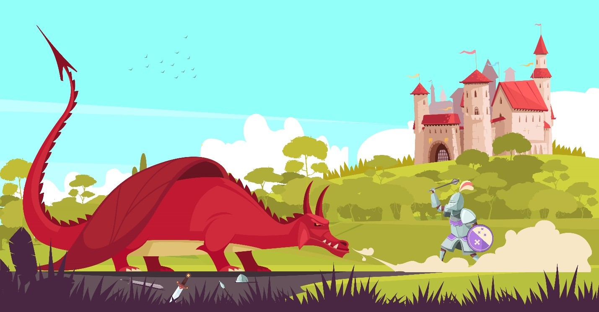

Quest #5
A sense of urgency in the air, it is in the middle of the day and the view shows you with a dragon, a battle seems to be happening between you and the dragon and yet it doesn’t seem intent in harming you, with your knowledge of dragon you try to reason with it and ask why it is angry, the dragon replies “Your people bothered me first! I only went in this direction because I felt a familiar presence!” as you listen you realize that you have also felt a familiar presence, the dragons presence, in this current situation you can beat the dragon, you will be celebrated by the people but you can reason with the dragon and avoid even more conflict, what will you do?
